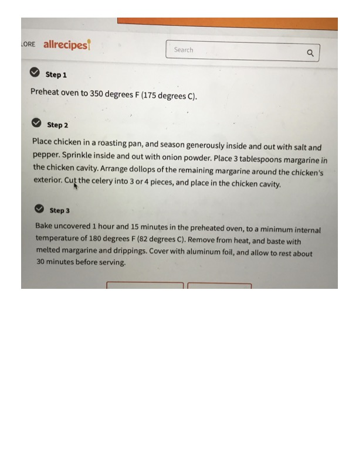

Oven Roasted Chicken

Original cookbook page 85
Cook: 1 hour 15 minutes
Ingredients
- Whole chicken
- Salt
- Pepper
- Onion powder
- Margarine (3 tablespoons + additional dollops)
- Celery (3-4 pieces)
Instructions
- Preheat oven to 350 degrees F (175 degrees C).
- Place chicken in a roasting pan, and season generously inside and out with salt and pepper. Sprinkle inside and out with onion powder. Place 3 tablespoons margarine in the chicken cavity. Arrange dollops of the remaining margarine around the chicken's exterior. Cut the celery into 3 or 4 pieces, and place in the chicken cavity.
- Bake uncovered 1 hour and 15 minutes in the preheated oven, to a minimum internal temperature of 180 degrees F (82 degrees C). Remove from heat, and baste with melted margarine and drippings. Cover with aluminum foil, and allow to rest about 30 minutes before serving.
Recipe #85 from collection